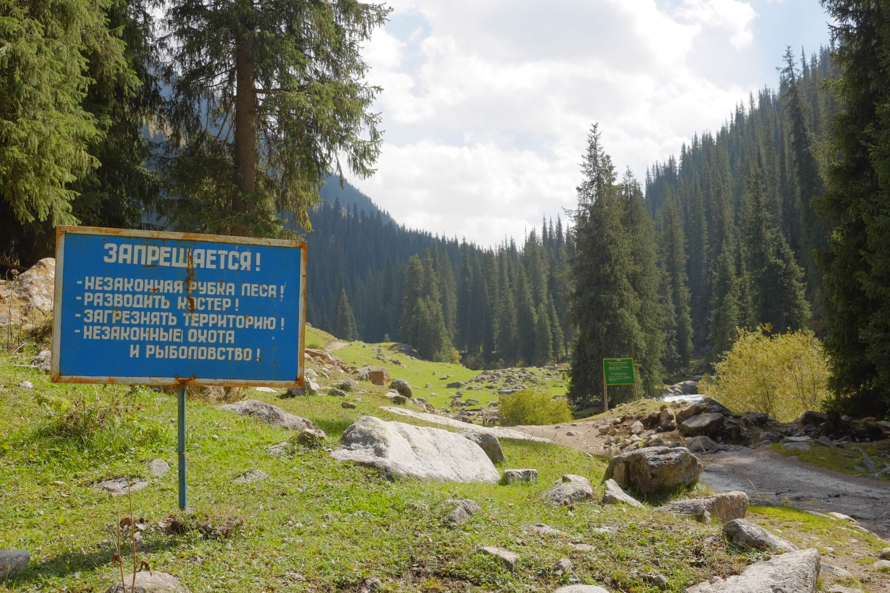

Hiking in Altyr-Arashan Posted on 2 October, 2023 by Dan Vonk personal, travel A post ⊕ tien shan ss ⊕ fording required  fff ⊕ Kel-Suu content Please enable JavaScript to view the comments powered by Disqus.